6. Bevegelser til lyd#
I dette kapitlet skal vi se nærmere på forskjellige typer bevegelser til musikalsk lyd, eksemplifisert ved luftinstrumentspilling, fridansing og tegning til musikk.
Spontanbevegelser#
På T-banen ser man folk som sitter og nikker på hodet eller rister på foten mens de lytter til musikk på en mobil mediespiller. I parken jogger folk med propper i ørene og bruker musikken som hjelp til å yte litt mer. På konsert spiller noen luftgitar ved å etterligne bevegelsene til musikeren på scenen, og på en nattklubb holder musikken dansen i gang. Disse eksemplene viser spontane bevegelser som på forskjellig vis er knyttet til den musikalske lyden. Bevegelsene kan også fortelle noe om musikken det lyttes til, hvilke musikalske kvaliteter det fokuseres på, og hvordan man synkroniserer en kroppslig respons til lyden. Der ord kommer til kort for å beskrive en musikalsk opplevelse, kan bevegelsene si noe om hva en person legger merke til i det musikalske forløpet.
I det forrige kapitlet så vi på forskjellige typer bevegelser hos utøvere, og hvilken funksjon slike bevegelser kan ha for vår oppfatning av musikken. En annen måte å observere musikkutfoldelse på kan være å studere bevegelsene til den som opplever musikken. Dette er et tema som i liten grad har vært systematisk utforsket, så det er relativt lite forskningsmateriale å hente kunnskap fra. I dette kapitlet skal vi derfor se nærmere på noen observasjonsstudier vi har utført ved Universitetet i Oslo de siste årene. Gjennom arbeidet med lytteres spontane bevegelser til musikk har vi identifisert flere forskjellige bevegelsestyper:
Mimebevegelser som er beregnet på å mime bevegelsene hos utøveren, for eksempel luftinstrumentspilling.
Lydakkompagnerende bevegelser som følger bestemte kvaliteter i lyden, men ikke så direkte som mimebevegelser.
Lydskisseringsbevegelser som mer generelt følger lyden, for eksempel å følge konturene i en melodi med hånden.
Dansebevegelser som ofte er knyttet til rytmiske kvaliteter i den musikalske lyden.
I de følgende avsnittene skal vi se nærmere på disse bevegelsestypene og hvordan det er mulig å utvikle teorier og metoder for å studere slike bevegelser.
Luftinstrumentspilling#
La oss begynne med å se på det som kan kalles mimebevegelser. Dette er forskjellige typer bevegelser som har som mål å etterligne bevegelser som er sett (eller hørt) hos utøvere av den musikken man beveger seg til. Et eksempel på slike mimebevegelser er luftinstrumentspilling, der man ”spiller” et instrument i luften. Det er mulig å mime at man spiller alle instrumenter, men det er mange som tenker på luftgitar som et av de mest populære luftinstrumentene. Dette skyldes nok at gitaren er et instrument som ofte er i fokus i mange musikalske sammenhenger.
Luftinstrumentspilling viser ofte hvilke kvaliteter i lyden man oppfatter og fokuserer på, men det kan også være en indikator for vår hukommelse for bestemte lydproduserende handlinger. En som spiller i luften, viser evnen til raskt å trekke ut de viktigste elementene fra et komplekst lydbilde og reprodusere disse ved hjelp av kroppsbevegelser. Dette er noe Rolf Inge Godøy har kalt motormimetisk skissering, ettersom det er en tilnærmet miming av motoraktiviteten som ligger til grunn for den opprinnelige lydproduserende handlingen (Godøy et al. 2006b).
Motormimetisk skissering kan ses på som en type målrettet imitasjon (Wohlschlager et al. 2003), der ”målet” kan være anslaget av en tone eller toppunktet i en melodilinje. Motormimetisk skissering ser ut til å være noe alle kan gjøre, og virker som et av fundamentene for menneskelig utvikling. Fra vi blir født er det meste av vår læring basert på å imitere mennesker i våre omgivelser. Det er på denne måten vi lærer å stå, gå, snakke og spise. Imitasjon er også en viktig del av musikkopplæringen, der man utvikler ferdigheter på et instrument ved å gå i lære hos en eldre og mer erfaren musiker.
Med utgangspunkt i at vi gradvis lærer å imitere mye av det vi har sett andre gjør, vil vi også kunne forvente at alle burde klare å imitere spilling på vanlige instrumenter. Dette har vi erfart i våre observasjonsstudier av luftinstrumentspilling. Kvaliteten på luftinstrumentspillingen varierer, men vi har enda ikke møtt en eneste person som ikke var i stand til å imitere et instrument de kjenner til. Det er også interessant å legge merke til at denne typen musikalsk utfoldelse oppøves til et virtuost nivå i forbindelse med det årlige verdensmesterskapet i luftgitar som har vært organisert i forbindelse med Oulu Music Video Festival i Finland siden 1996.
Utgangspunktet for våre studier av luftinstrumentspilling var å se på forskjellen mellom noviser, folk som har liten eller ingen musikalsk erfaring, og eksperter, det vil si profesjonelle musikere. Eksperter har årelang erfaring med å spille et ekte instrument, og det ville derfor være naturlig å anta at de også ville klare å mime et instrument med høy grad av presisjon. De som aldri har spilt et instrument har sin kunnskap fra det de har sett og hørt av musikk i hverdagen. Med utgangspunkt i ideen om en aktiv kognisjon, ville vi allikevel kunne anta at noviser burde klare å spille et luftinstrument med begrenset presisjon.
Som beskrevet i kapittel 5 består musikkutøvelse av sammensatte bevegelser med mange forskjellige funksjoner. Tilsvarende ville man kunne forvente at luftinstrumentspilling viser noe av den samme kompleksiteten. Det er naturlig at både lydproduserende handlinger og andre typer musikkrelaterte bevegelser blir imitert: ulike typer støttebevegelser, lydakkompagnerende og kommunikative bevegelser. For mange vil nettopp kombinasjonen av alle disse ulike bevegelsestypene være målet med å spille et luftinstrument. Hvis man mimer en rockegitarist, ligger mye av ekspressiviteten nettopp i mange av de ikke-lydproduserende bevegelsene. Imitasjon av slike ekspressive bevegelser vil da være en viktig komponent for å videreformidle den emosjonelle kvaliteten i musikkopplevelsen.
Ved Universitetet i Oslo har vi gjort flere observasjonsstudier av luftgitarspilling, men på grunn av kompleksiteten i materialet fant vi det enklere å studere luftpianospilling i detalj. Luftgitarister beveger seg gjerne mer enn luftpianister, noe som gjør en systematisk tilnærming vanskeligere. I resten av dette avsnittet skal vi derfor se nærmere på en studie av luftpianister og hvordan deres bevegelser kan ses i tilknytning til kvaliteter i lyden. En mer detaljert fremstilling finnes i Godøy et al. (2006b).
Ettersom målet med studien var å se på forskjeller i luftinstrumentspilling mellom personer med ulik musikalsk bakgrunn, ble det rekruttert forskjellige deltagere – fra novise til ekspert. Her skal vi se på tre av dem: deltager A (ingen musikalsk trening), deltager B (litt musikalsk trening) og deltager E (profesjonell pianist). Deltagerne ble bedt om å lytte til musikken og umiddelbart forsøke å imitere hvordan de forestilte seg at pianisten spilte. Fem musikalske eksempler ble valgt ut med tanke på å dekke forskjellige typer pianoteknikker og musikalske parametre. Fire av disse var hentet fra det klassiske repertoaret, mens ett var fra en jazz-improvisasjon.
For å analysere materialet bestemte vi oss for å bruke en kvalitativ analysemetode basert på samsvar mellom musikk og bevegelse. Begrepet samsvar brukes her for å beskrive forholdet mellom observerte bevegelser og de bevegelsene som ble brukt for å produsere lyden i det musikalske utdraget. Følgende syv samsvarsegenskaper ble brukt som utgangspunkt for den kvalitative vurderingen:
generell aktivitet
generell tonehøydeplassering
detaljert tonehøydeplassering
generell tidsplassering
detaljert tidsplassering
dynamisk forløp
artikulasjon
Vi begynte med å se på generelle sammenhenger mellom musikk og bevegelse, for deretter å gå nærmere inn på de detaljerte sammenhengene. Den generelle aktiviteten beskriver tetthet av handlinger knyttet til tonetetthet i musikken, uavhengig av tonehøyde og rytmisk plassering. Dette kan ses som en indikasjon på hvordan man oppfatter generelle kvaliteter i musikken. Generell og detaljert tonehøydeplassering dreier seg om den romlige plasseringen av hender. Dette kan gi en indikasjon på hvordan personen oppfatter tonehøyder. Generell og detaljert tidsplassering beskriver hvordan handlingene struktureres i tid i forhold til oppfattede toner. Dynamisk forløp dreier seg om størrelse og hastighet på bevegelser i tilknytning til hvordan man oppfatter dynamikken i lyden. Artikulasjon beskriver musikalske kvaliteter som for eksempel aksenter, staccato, legato, accelerando og rubato. De syv forskjellige kategoriene dekker dermed en rekke forskjellige musikalske parametre som det er vanlig å forholde seg til når man evaluerer utøvelse av musikk.
I analysen av materialet bestemte vi oss for å vurdere hvert av de ovennevnte samsvarene ved at hver av forskerne i studien individuelt vurderte hver video. Dette kan dermed ses som en kvantitativ studie basert på kvalitative data, der hver deltager ble tildelt en karakter på en skala fra 0 til 3. Her betyr karakter 0 at det ikke er samsvar mellom bevegelser og de nødvendige lydproduserende handlinger, mens karakter 3 ble tildelt når det var godt samsvar.
Gjennomsnittsresultatene fra evalueringen av utøverne er oppsummert i tabell 1. Ikke overraskende er det tett samsvar mellom graden av musikalsk skolering og poengnivået som ble oppnådd i studien. Mer overraskende fant vi at deltagerne med minst musikalsk skolering gjorde det relativt godt når det kom til samsvar mellom musikk og bevegelse på et overordnet nivå. Dette er også en generell oppfatning vi sitter igjen med etter å ha sett hundrevis av deltagere spille luftgitar i forskjellige sammenhenger. Generell oppfattelse av tonehøyde og distribusjon av bevegelser i tid og rom ser ut til å være godt innarbeidet hos de fleste. Eksempler på dette kan ses i figur 41 (video), der deltager A, B og E spilte en oppadgående bevegelse med et løft på slutten i et musikalsk utdrag av en oppadgående skala.
{title=”Tabell 1: Gjennomsnittlig samsvar hos de fem utøverne (A–E) i luftpianostudien. Karakterskalaen går fra 0–3, der 3 er best.”}
Egenskap |
A |
B |
C |
D |
E |
|
|---|---|---|---|---|---|---|
1. |
Generell aktivitet |
1.4 |
1.8 |
2.6 |
2.6 |
3 |
2. |
Generell tonehøydeplassering |
0.8 |
1.4 |
2.0 |
2.4 |
2.8 |
3. |
Detaljert tonehøydeplassering |
0.2 |
0.6 |
0.8 |
1.6 |
2.4 |
4. |
Generell tidsplassering |
1.6 |
1.4 |
1.8 |
2.6 |
2.6 |
5. |
Detaljert tidsplassering |
1.0 |
0.2 |
0.8 |
1.8 |
2.2 |
6. |
Dynamisk forløp |
1.0 |
0.8 |
2.2 |
2.8 |
2.8 |
7. |
Artikulasjon |
0.2 |
0.2 |
0.8 |
1.8 |
2.4 |
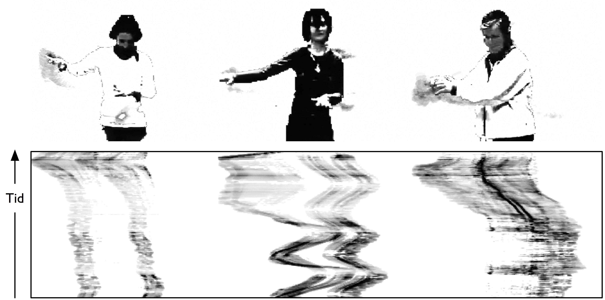
En tydelig forskjell mellom deltagerne gjaldt responstid. Figur 42 (video) viser hvordan eksperten raskt gjenkjenner et stort registersprang, mens de to andre bruker lengre tid før de tilpasser bevegelsene etter lyden de hører.
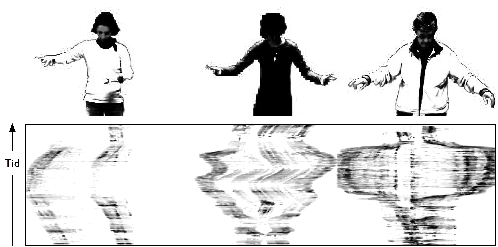
Når det kom til detaljert romlig og tidsmessig samsvar, samt dynamikk og artikulasjon, var det bare eksperten som utmerket seg. Bevegelseshistoriebildet i figur 43 (video) viser hvordan eksperten utfører et løft for å forflytte seg fra lavt til høyt register. Her starter sekvensen med at øynene ser på den virtuelle øvre delen av instrumentet, deretter følger hodet med, og så løftes hendene i forventet bane. Det er en slik respons man kunne forventet i ekte pianospill og vitner derfor om mye erfaring.
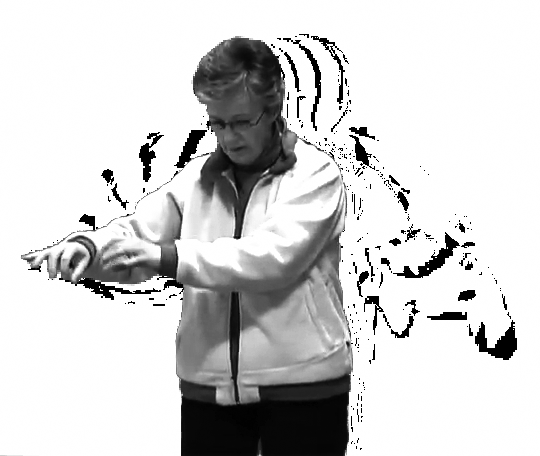
Vi skal være forsiktige med å trekke for bastante konklusjoner basert på det begrensede materialet i denne observasjonsstudien, men det er noen punkter som peker seg ut, og som det kan være interessant å se nærmere på i videre studier. Først det at luftinstrumentspilling er noe alle kan gjøre, uavhengig av musikalsk og bevegelsesrelatert trening. Det ser også ut til å være en jevn progresjon i ferdighetsnivå fra novise til ekspert, noe som vitner om en økende grad av bevissthet når det gjelder både lytting og forståelse av musikalsk lyd, samt motoriske ferdigheter til å gjenskape bevegelser relatert til lyden. I observasjonsstudien hadde vi valgt eksempler både med og uten en klar puls. Som forventet syntes deltagerne det var enklere å spille utdragene der de kunne bruke rytmen i musikken til å forberede sine bevegelser.
Det er flere utfordringer knyttet til studier av luftinstrumentspilling. Én utfordring er at deltagerne ikke er fysisk begrenset av et instrument. Dette gjør at flere beveger seg over et større område enn de ville ha gjort hvis de spilte et fysisk instrument. Dette var en av grunnene til at vi valgte stillestående luftpianister fremfor luftgitarister som beveget seg mye friere i rommet.
En annen utfordring er mangelen på fysisk kontakt med et instrument. De lydproduserende handlingene man utfører på et instrument, er basert på den fysiske motstanden man møter i instrumentet. Når man slår på en tangent, vil fingeren nødvendigvis stoppe når man treffer tangenten, og resten av kroppsbevegelsen vil følge etter. På et luftinstrument må man selv skape denne motstanden i armen når man spiller. Så energimessig kan luftinstrumentspilling ses på som det motsatte av det å spille et instrument. På instrumentet fokuserer man på energieffektivisering, mens man på et luftinstrument må bruke dobbelt så mye energi, både kraft og motkraft. At man likevel får til dette, vitner om en grunnleggende forståelse av de prosessene som ligger til grunn for det å spille et instrument.
Dans til musikk#
Det finnes mye litteratur som forsøker å få dansere til å danse bedre til musikk. Tilsvarende finnes det noe litteratur for å hjelpe musikere til å spille til dans, for eksempel Teck (1990). Det finnes derimot ikke så mange studier som tar for seg spontandans til musikk. Etter å ha gjennomført studien av luftinstrumentspilling var vi interessert i å se på hvordan personer spontant danser til musikk. Her var også målet å studere forskjeller mellom noviser og eksperter, så vi rekrutterte personer med forskjellig erfaring. I dette avsnittet skal vi konsentrere oss om opptakene av tre studenter i moderne dans. Alle tre hadde bakgrunn fra klassisk og moderne dans, og hadde også spilt ett eller flere musikkinstrumenter som barn. Ved å velge tre deltagere med så lik bakgrunn for studien, er det mulig å utføre en komparativ analyse der de individuelle forskjellene kommer tydelig frem.
Deltagerne fikk beskjed om at de skulle høre fem forskjellige musikkutdrag, og at hvert av utdragene skulle spilles av tre ganger. Musikkeksemplene var valgt ut for å dekke forskjellige musikalske dimensjoner (se Jensenius (2007) for detaljer). Instruksjonen var at de skulle begynne å bevege seg med en gang de hørte lyd, og at de skulle bevege seg fritt til musikken. De fikk ikke høre musikkeksemplene før vi startet opptaket, og de fikk heller ikke se hverandre danse.
Som vi så i kapittel 3, er Labans bevegelsesanalyse en kvalitativ metode som egner seg godt for å trekke ut forskjellige bevegelseskvaliteter. Utfordringen når vi ønsker å se på hvordan bevegelser forholder seg til den musikalske lyden, er å finne en metode for å kunne sammenligne kvaliteter i bevegelse med kvaliteter i lyd. I studien av luftinstrumentspilling definerte vi et sett med samsvar mellom mimebevegelser og de lydproduserende handlingene. Disse samsvarene er ikke direkte relevante for fridans til musikk, der målet er å se på generelle kvaliteter i bevegelsene versus egenskaper i den musikalske lyden. Dette kan vi kalle paralleller mellom musikk og bevegelse.
Det har blitt gjort flere forsøk på å definere paralleller mellom musikk og bevegelse, og ett av disse systemene er Hodgins (1992) modell for koreomusikalsk analyse. De koreomusikalske parallellene ble utviklet for å analysere koreografert dans, men vi har sett at modellen også kan være nyttig når man skal studere fridans til musikk. Hodgin foreslår i sin modell et sett paralleller mellom egenskaper i dans og musikk: rytmikk, dynamikk, tekstur, struktur, kvaliteter og mimetikk (se Tabell 2).
{title=”Tabell 2: Hodgins (1992) koreomusikalske paralleller av sammenhenger mellom egenskaper i dansebevegelser og musikalsk lyd.”}
Dans |
Musikk |
|
|---|---|---|
Rytmikk |
Bevegelseshastighet |
Aksentuering, takt, handlingstetthet |
Dynamikk |
Bevegelsesvolum |
Musikalsk dynamikk |
Tekstur |
Antall personer |
Antall instrumenter, homofoni vs. polyfoni |
Struktur |
Fraser, motiver |
Fraser, motiver |
Kvalitet |
Bevegelsesnatur |
Klangfarge, artikulasjon |
Mimetikk |
Imitasjon, bilder |
Bilder |
Noen av parallellene er enklere å forholde seg til enn andre, særlig rytmikk, dynamikk, tekstur og struktur. Den rytmiske parallellen kan forstås med utgangspunkt i temporale aspekter ved både lyd og bevegelse. Den dynamiske parallellen er knyttet til utstrekning og volum i bevegelser i forhold til dynamikk i lyden (for eksempel intensitet og lydnivå). Den teksturale komponenten relaterer seg til tettheten i enheter i både bevegelse og lyd, og kan knyttes direkte til antall personer som danser eller antall instrumenter som spiller. Den strukturelle kvaliteten dreier seg om likheter i fraser og motiver mellom bevegelse og lyd. Eksempler på disse parallellene kan ses i Figur 44. Her vises et utsnitt fra to musikkeksempler som hver er repetert tre ganger. Det første eksemplet er preget av en blanding av utholdte og iterative toner i lavt register, mens det andre eksemplet har mer dynamikk og ligger i et høyt register. Bevegelseskurvene for hver av de tre danserne viser mindre og mer utholdte bevegelser i det første eksemplet, og stor variasjon i dynamikk, rytmikk og tekstur i det andre eksemplet.
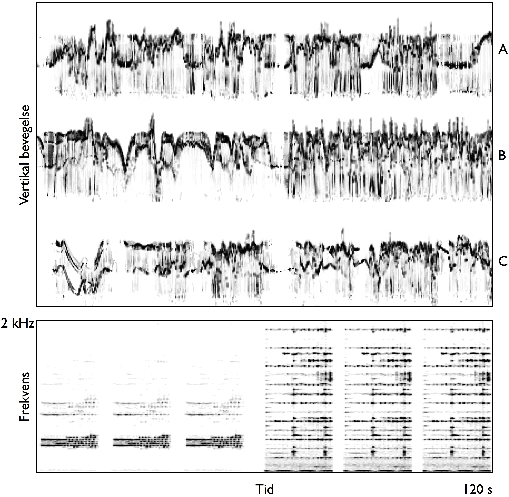
De to siste parallellene til Hodgins refererer til henholdsvis kvaliteter i bevegelse og lyd, samt hvordan slike kvaliteter brukes metaforisk. Et eksempel på en slik mimetisk parallell kan ses i et utsnitt fra dansestudien i figur 45. Her beveger danserne hendene oppover samtidig som de også ser oppover, noe som korresponderer med de oppadgående arpeggioene i musikken. Denne oppadgående bevegelsen hos danserne kan forstås som at lyden er med på å ”løfte” danserne og deres bevegelser.
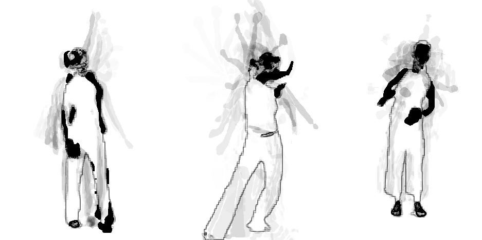
Flere lignende korrelasjoner kan ses i materialet, selv om de ofte er utført forskjellig av danserne. En ”flytende” bevegelse kan for eksempel gjøres med en fot, en hånd eller hele kroppen; de underliggende kvalitetene kan allikevel være like. Når man studerer et slikt materiale kan det være en fordel å begynne med en bred, kvalitativ analyse. Deretter er det mulig å finne frem til noen parametre som kan brukes som utgangspunkt for en kvantitativ studie av bestemte egenskaper i bevegelse og lyd.
Lydskissering#
Studiene som ble presentert i de foregående avsnittene, har fokusert på full kroppsbevegelse til musikalsk lyd. En annen tilnærming er å studere bevegelser fra bare én del av kroppen, for eksempel håndbevegelser. I boken Det musiske menneske skriver den norske musikkforskeren Jon-Roar Bjørkvold om hvordan barn tegner til musikk. Han undersøker hvordan bevegelsene de gjør på arket, på forskjellig måte kan relateres til elementer i den musikalske lyden (Bjørkvold 1989, 80–82). Vi ønsket å studere slik tegning til lyd i mer detalj og laget en studie der målet var å se hvordan man skisserer opplevelsen av musikalsk lyd med en penn.
Tegning til musikk kan ses på som en rask skisse av de kvaliteter i lyden man legger merke til, og vi brukte derfor begrepet lydskissering i en artikkel om denne observasjonsstudien (Godøy et al. 2006a). Dette var nettopp fordi den grafiske fremstillingen var mindre viktig enn bevegelsene som lå til grunn for tegningen. Studien ble gjennomført ved at deltagerne brukte en digital tegneflate der de ikke kunne se resultatet av det de tegnet. Dette gjorde det også enklere å gå gjennom mange forskjellige lyder i løpet av kort tid.
Vår hovedinteresse var å se på hvilke kvaliteter i lyden som ble oppfattet av deltagerne, og hvordan disse ble skissert med den digitale pennen:
miming av den lydproduserende handlingen (for eksempel impulsiv, utholdt eller iterativ)
skissering av egenskaper i lyden (for eksempel dynamisk utvikling, tonehøydeforandringer, klangutvikling)
skissering som på forskjellige måter gjenspeiler emosjonelle kvaliteter i lyden (for eksempel følelsen av å bli ”løftet” eller følelsen av ”flyt”)
kombinasjoner av de ovennevnte kategoriene eller andre egenskaper
Disse kategoriene kan ses som en kombinasjon av samsvarene mellom musikk og bevegelse som vi fokuserte på i luftinstrumentstudiene, og Hodgins paralleller fra dansestudien. Noen av disse alternativene er knyttet til bestemte egenskaper i lyden, andre til mer generelle kvaliteter. Vi passet på å ikke be deltagerne om å velge én av disse tilnærmingene for å se hva de selv ville fokusere på. Ideen var at vi kan oppfatte både spesifikke og mer generelle kvaliteter i lyden på samme tid.
Et annet aspekt ved denne studien, og til en viss grad også i de tidligere studiene, er ideen om motorekvivalens som ble beskrevet i kapittel 2. Motorekvivalens forklarer vår evne til å utføre den samme handlingen på forskjellige måter, som at man kan åpne en dør med hånden, albuen eller haken. Tilsvarende er det mange måter å bevege seg til lyd på, alt fra å bruke hele kroppen til å tegne med en penn. Alle slike bevegelser kan ses på som en kroppslig manifestasjon av den mentale representasjonen vi har av lyden, og bevegelsene kan derfor gi oss informasjon om de egenskapene i lyden vi oppfatter som viktige.
Som i luftinstrumentstudien ønsket vi å se på ulikhetene mellom deltagere med forskjellig musikalsk bakgrunn. Vi valgte ut fire personer som hadde lite eller ingen musikalsk erfaring, og fem musikkstudenter på universitetsnivå. Studien ble utført ved at forsøkspersonen satt ved et bord med en grafisk tegneflate foran seg. Lydene ble spilt fra en datamaskin, og pennens bevegelser på tegneflaten ble registrert og lagret på maskinen. I tillegg gjorde vi videoopptak som dokumentasjon av studien.
Deltagerne hørte totalt 50 korte lyder, og mellom hver lyd var det en pause som var like lang som selve lyden. Instruksjonen var at de først skulle lytte og deretter lage en skisse av lyden med den digitale pennen. De fikk ingen nærmere beskjed om hva de skulle fokusere på i lyden, eller hvordan de skulle utføre skisseringen. Dette var fordi vi ønsket å se deltagernes spontane bevegelser, og hvilke egenskaper i lyden de valgte å fokusere på.
Lydene varte mellom to og seks sekunder, og dekket forskjellige handling–lyd-typer (impulsiv, utholdt og iterativ), samt forskjellige tonale og klanglige kombinasjoner: stabil, ustabil og udefinert. De første 30 lydene inneholdt bare ett eller noen få lydobjekter, mens de 20 siste lydene var mer komplekse, enten sammensatt av de enkle lydene eller utdrag fra musikkstykker. Her var ideen å se på hva det var deltagerne ville fokusere på i lydene, og om man kunne se noen mønstre i lydskisseringen.
Som ventet fant vi at deltagerne brukte ulike strategier i lydskisseringen. Figur 46 (ekstern lyd) viser ni forskjellige skisser til lyden av en symbal. Én deltager valgte å følge den dynamiske utviklingen av lyden, andre imiterte den lydproduserende handlingen ved bare å trykke ned i brettet (som resulterer i en prikk). Andre igjen tegnet en sirkel eller spiral, noe som kan virke som en imitasjon av sirkulariteten i klangen. Denne variasjonen i uttrykk er en god oppsummering av hele studien. Noen av deltagerne fokuserte primært på imitasjon av lydproduserende handlinger, andre fokuserte på klangkvaliteter og andre igjen fokuserte på utviklingen av lyden over tid. Det virker også som deltagerne valgte én av disse strategiene og holdt på den gjennom hele studien.
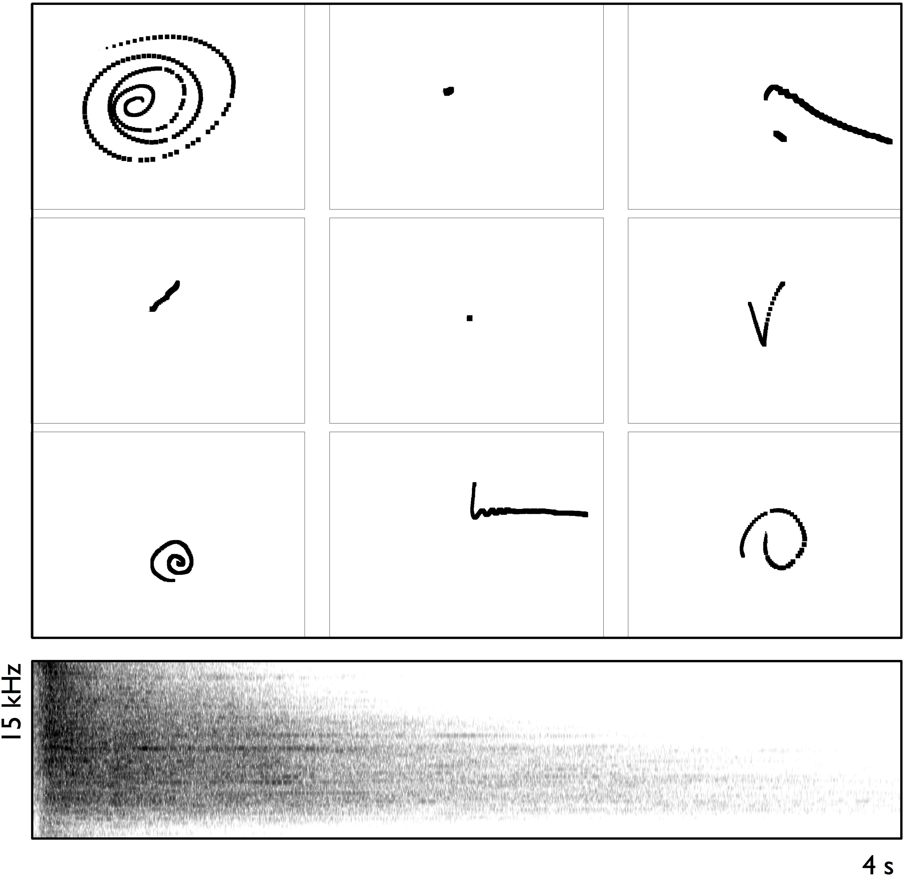
Figur 47 (lyd) viser skissene som ble laget til en iterativ lyd fra en bambusstang. Her tegnet alle den iterative klangkvaliteten med taggete linjer. Det er interessant å legge merke til at deltagerne valgte å tegne i forskjellige retninger, selv om de fleste begynte fra venstre. Dette kan nok knyttes til vår trening i å skrive fra venstre mot høyre i vår kultur. Tilsvarende var det en tydelig tendens at deltagerne assosierte den øverste delen av brettet med lysere tonehøyde. Dette kan igjen være kulturelt betinget og styrt av metaforer vi lærer om at lyse toner er høyere oppe, og mørke toner er lenger nede.
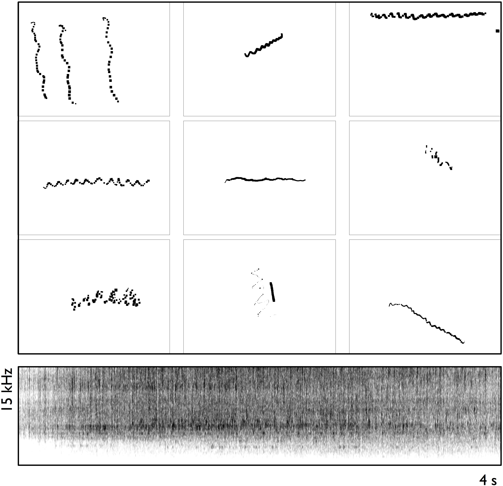
Vi fant også en høy grad av likhet i hvordan deltagerne identifiserte lydhendelser. Et eksempel på dette kan ses i figur 48 (lyd) der alle deltagerne tegnet tre like hendelser når de hørte en lydfil med tre nedadgående skarpe lyder. Det var allikevel forskjeller mellom tegningene, noen tegnet oppover, noen nedover og noen ned og opp. De fleste tegnet tre hendelser som var like i størrelse, form og retning, mens noen laget dem litt forskjellige. Men selv med disse små forskjellene var det tydelig at alle gjenkjente og klarte å gjenskape de tre lydobjektene uten større problemer.
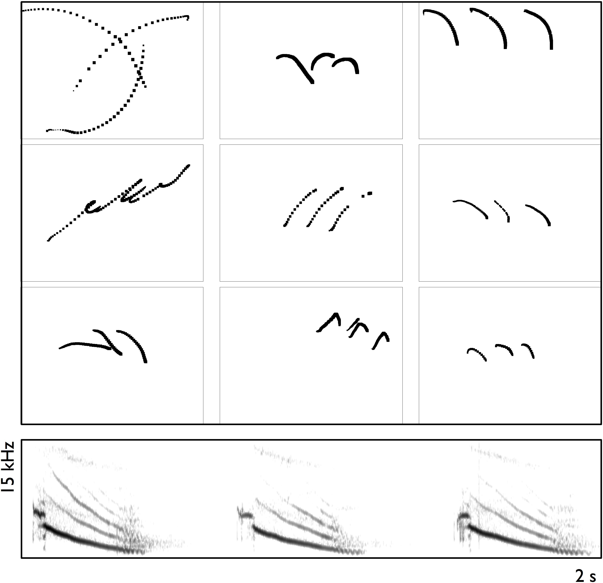
Mer varierende resultat var det for lydsettet med sammensatte lydobjekter. Figur 49 (lyd) viser skissene av en kompositt lyd som består av en impulsiv lyd fra et triangel, en nedadgående glissando i fiolin og cello og avslutningsvis en kort og iterativ lyd. Her er det interessant å legge merke til at alle forsøkspersonene bare skisserte én strek for å representere de to nedadgående lydene, noe som tyder på at man opplever at disse to smelter sammen i en figur. Ingen av skissene viser antydning til å merke triangelanslaget i begynnelsen, og bare noen få registrerte den iterative avslutningslyden. Det er uvisst om personene som ikke tegnet den iterative lyden, hørte den som en selvstendig enhet, eller om de tenkte at den hørte sammen med de utholdte lydene.
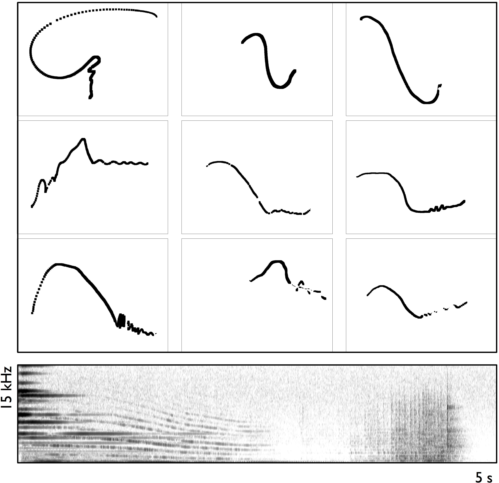
Selv om denne studien ikke fokuserte på deltagernes tegneferdigheter, er det klart at slike ferdigheter vil påvirke resultatet. En person som har tegnet mye, vil nødvendigvis ha en fordel i det å kunne bruke en penn til å uttrykke seg. På den andre siden vil en person som har liten tegneerfaring, men som er musikalsk godt trenet, allikevel kunne lage en skisse som presist uttrykker opplevde egenskaper i den musikalske lyden. For å få en idé om subjektive forskjeller mellom personene kan vi se på hvordan alle skissene fra en bestemt person skiller seg fra alle skissene til en annen person. Figur 50 viser alle skissene av de korte lydene som ble tegnet av deltager 1. Denne personen hadde liten musikalsk erfaring, men hadde lang erfaring med dans og tegning. Dette kan man kanskje se i skissene, ettersom personen brukte pennen aktivt og hovedsakelig fulgte overordnede klanglige kvaliteter i lydene. Figur 51 viser skissene til deltager 9. Dette var en musikkstudent som brukte pennen mye mer sparsomt, og som i større grad så ut til å imitere de lydproduserende handlingene og ikke bare følge konturene i lyden. Generelt fant vi at personer med musikalsk trening i større grad skisserer med utgangspunkt i lydproduserende handlinger. Dette er kanskje ikke uventet; mange som har spilt et instrument i lang tid, vil nok bruke denne kroppslige erfaringen som utgangspunkt også for å lytte til musikk.
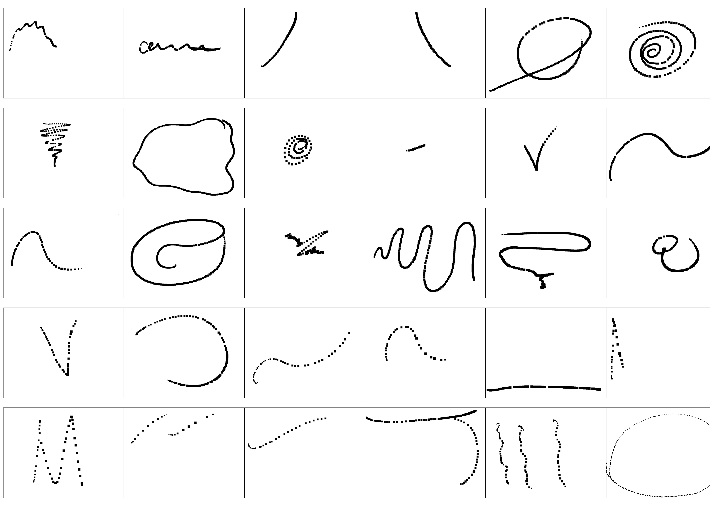
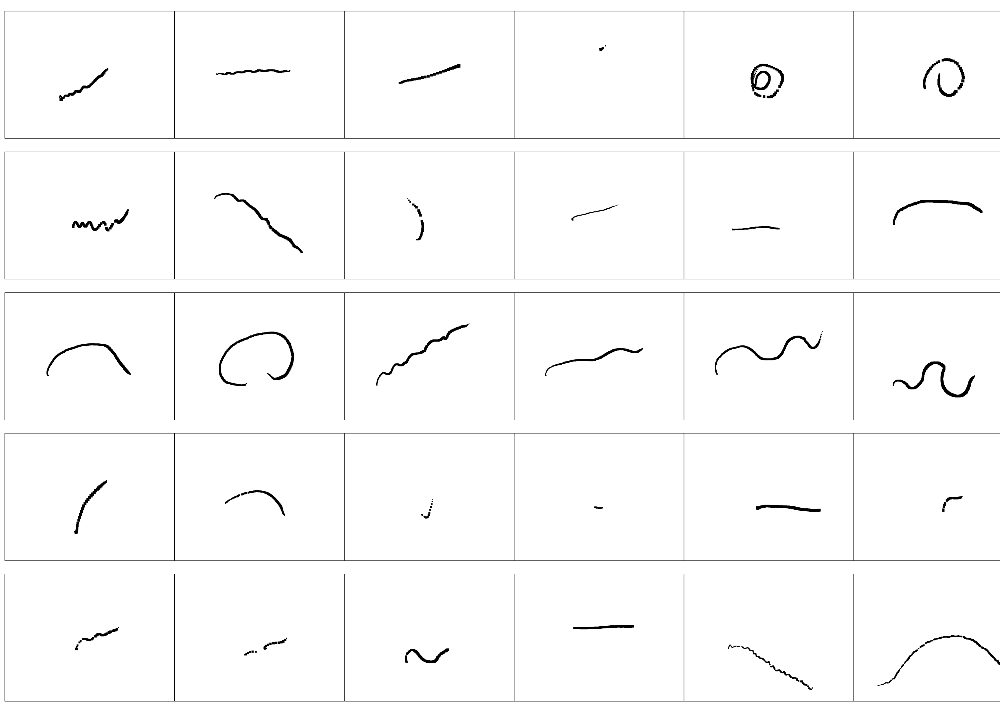
I sin doktorgradsavhandling gjennomførte Egil Haga (2008) en oppfølgingsstudie basert på datamaterialet som ble samlet inn i denne studien. Her ba han en ny gruppe forsøkspersoner om å vurdere sammenfallet mellom lyden og skissene som var laget med utgangspunkt i lyden. Han konkluderer med følgende:
Tonehøyde vises i brattheten og retningen til kurvene. -Klangfarge vises i måten linjen tegnes på (jevn, oppdelt, lett, stram). -Lydproduksjon vises i lengden på linjen, kort og rett for impulsive, lengre for utholdte, og ujevn for iterative lyder. -Handlingstetthet i lyden vises i taggethet i linjen.
Et aspekt vi ikke har studert i denne omgang, men som vil stå sentralt i senere studier, er tidsaspektet i skisseringen. Generelt la vi merke til at de fleste deltagerne begynte å tegne rett etter at de hadde hørt anslaget i de korte lydene. I flere tilfeller gjorde de ferdig tegningen før etterklangen til lyden hadde dødd helt ut. Dette gjorde de selv om vi helt eksplisitt hadde sagt at de skulle vente med å tegne til etter at de hadde hørt ferdig lyden. En forklaring på dette kan være at de opplevde selve anslaget som den viktigste komponenten, og at resonansen som fulgte, ikke ville bringe noe nytt. Dette støtter Godøys (2001) idé om en tydelig forskjell mellom hvordan vi oppfatter eksitasjon og resonans, noe som blir diskutert nærmere i kapittel 7. For de komplekse lydene ventet derimot alle deltagerne til det ble helt stille, før de begynte å tegne. Dette tyder på at deltagerne her la merke til kompleksiteten og derfor ventet med å tegne til de hadde hørt helheten.
Når det gjelder forskjeller mellom deltagerne med og uten musikalsk skolering, er det også noe som peker seg ut. Deltagerne med liten musikalsk skolering fokuserte mer på overordnede kvaliteter, for eksempel omhyllingskurven til lyden. Deltagerne med musikalsk skolering fokuserte i større grad på opplevde kvaliteter i de lydproduserende handlingene som lå til grunn for lydproduksjonen. Disse personene var også generelt bedre til å skille mellom ulike lydobjekter i de sammensatte lydene, mens deltagerne med liten musikalsk skolering behandlet dem som ett sammenhengende lydobjekt. Vi skal allikevel være forsiktige med å generalisere for mye fra en begrenset studie som dette, og heller oppfordre andre til å gjennomføre lignende studier.
Sammendrag#
Dette kapitlet har beskrevet tre forskjellige observasjonsstudier av bevegelse til musikalsk lyd: luftinstrumentspilling, fridans og lydskissering. Selv om alle studiene hadde det samme utgangspunktet, representerer de tre forskjellige metodiske tilnærminger. I studien av luftinstrumentspilling brukte vi en karakterskala for å kvantifisere resultatene fra en kvalitativ vurdering av samsvar mellom de imiterte bevegelsene og antatt lydproduserende handling. I fridansstudien så vi på hvordan Hodgins koreomusikalske paralleller kan brukes for å forstå sammenhenger mellom egenskaper i lyd og bevegelse. I den siste studien brukte vi en todimensjonal fremstilling av ”tegninger” for å se på likheter og forskjeller i hvordan man skisserer egenskaper i lyd ved hjelp av en digital penn.
Studiene viser at alle kan bevege seg til musikk uavhengig av musikalsk trening. Hva man følger etter i lyden, ser derimot ut til å variere. Noen fokuserer på lydproduserende handlinger, andre følger mer overordnede kvaliteter i musikken. Dette vil nok i stor grad være avhengig av musikalsk trening og erfaring. Det må bemerkes at mennesker opererer med mange forskjellige nivåer på en gang, og denne kompleksiteten er ikke enkel å fange opp i kontrollerte studier som vi har sett på her.
Disse begrensede studiene viser at alle, uavhengig av musikalsk trening og erfaring, opplever koblinger mellom bevegelse og lyd, og at alle er i stand til å bevege seg etter lyden de hører. Dette støtter ideen om at koblinger mellom bevegelse og lyd er en integrert del av vår opplevelse av musikk. Også det at deltagerne som kalte seg selv ”umusikalske”, ikke hadde noen problemer med å følge overordnede egenskaper i den musikalske lyden, støtter opp under dette.
Les mer#
Luftinstrumentspilling: Godøy et al. (2006b)
Korrespondanser mellom musikk og bevegelse: Haga (2008)
Bevegelse til musikk: Styns et al. (2007)